| 縦断データの分析 |
| 縦断データの分析 |
このとき、これを合成モデルで表すと、その確率部分は
| 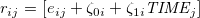 | (7.5) |
となる。
すると、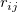 は、個人間では独立であっても、個人内では時点間で相関しており、かつ非等質である。
つまり、各個人単位の分散共分散行列を 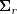 と表すと、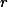 の分布は
![\begin{equation} \bm@general \boldmath \m@ne \mv@bold \bm@command {r} \sim N \left( \bm@general \boldmath \m@ne \mv@bold \bm@command {0}, \begin{bmatrix} \bm@general \boldmath \m@ne \mv@bold \bm@command {\Sigma }_ r
& \bm@general \boldmath \m@ne \mv@bold \bm@command {0}
& \dots
& \bm@general \boldmath \m@ne \mv@bold \bm@command {0}
\\ \bm@general \boldmath \m@ne \mv@bold \bm@command {0}
& \bm@general \boldmath \m@ne \mv@bold \bm@command {\Sigma }_ r
& \dots
& \bm@general \boldmath \m@ne \mv@bold \bm@command {0}
\\ \vdots
& \vdots
& \ddots
& \vdots
\\ \bm@general \boldmath \m@ne \mv@bold \bm@command {0}
& \bm@general \boldmath \m@ne \mv@bold \bm@command {0}
& \dots
& \bm@general \boldmath \m@ne \mv@bold \bm@command {\Sigma }_ r
\end{bmatrix} \right) \end{equation}](images/img-0100.png) |
(7.9) |
という、ブロック対角行列になる。
分散共分散行列 の対角部分、つまり残差分散は、
| 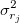 | 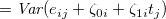 | (7.11) | ||
 |
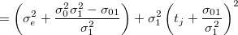 | (7.12) |
となり、時間  に対して2次の関係性を持つことになる。 つまり、1つの最小値から放射線状に増加すると仮定していることになる。
に対して2次の関係性を持つことになる。 つまり、1つの最小値から放射線状に増加すると仮定していることになる。
分散共分散行列 の非対角部分、つまり残差共分散は、
| 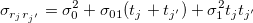 | (7.13) |
となり、強い時間依存性を持つことがわかる。
もし 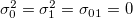 なら、 は対角行列となり、OLS を当てはめることができる。
もし 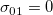 なら、 は複合対称性を持つことになる。
合成残差の自己相関は、
| 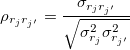 |
| 縦断データの分析 |